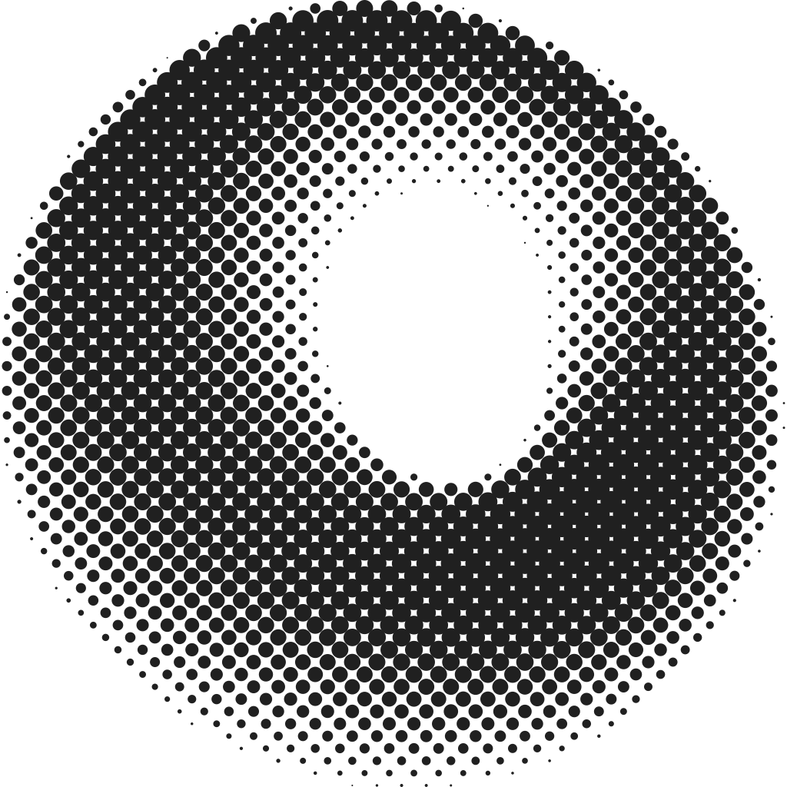

jcodeJCode Mobile / Stillness 12
Leave the desk.
Keep the thread.
Your server keeps working. Return to the same session, plan, and tool trail from your phone.
0.3.0 / Rust Adapter v2 / Android + Linux


jcodeJCode Mobile / Stillness 12
Your server keeps working. Return to the same session, plan, and tool trail from your phone.